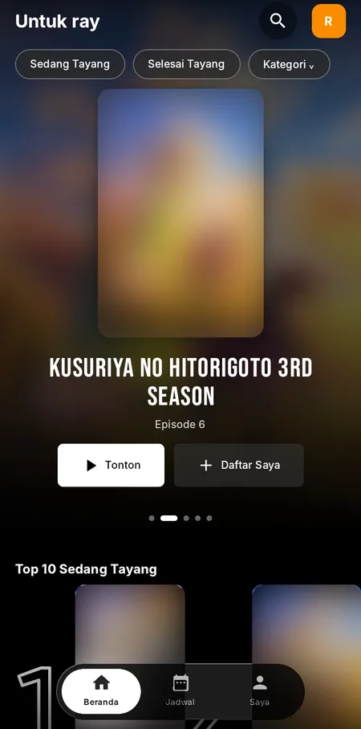

Gratis · Tanpa akun · Tanpa iklan
Nonton anime dengan tampilan sinematik.
Otakuray adalah aplikasi nonton anime untuk Android dan Android TV: tampilan modern, pilihan kualitas video, dan profil pengguna.
Versi 4.3.1 · Gratis, tanpa akun

Top 10Sedang tayang
Kualitas videoOtomatis, 360p – 1080p
Gratistanpa biaya
0 iklantanpa pop-up
Tanpa akunlangsung nonton
TV Readykontrol remote
Jelajahi
Semua yang perlu kamu tahu.
Pilih halaman di bawah untuk melihat lebih dekat.